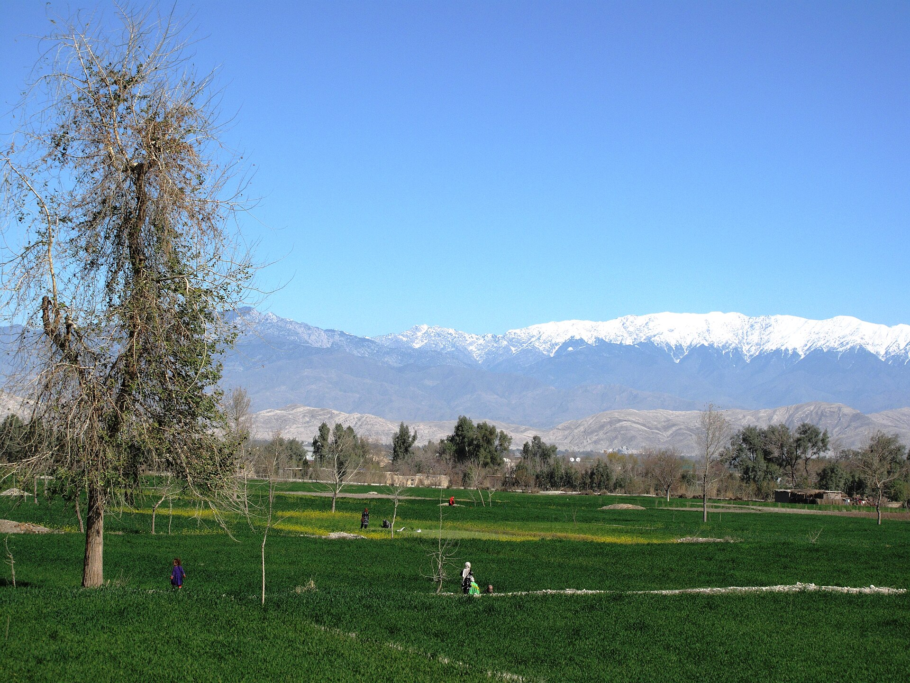
A refugee story · Calais, February 2016
Journey from
Afghanistan
to Calais
This is the story of a young man who left eastern Afghanistan and spent six months crossing Europe to reach the English Channel. Eight borders, no passport, and ten attempts to get across, told in his own words in the Calais “Jungle”, weeks before it was torn down.
Calais, February 2016 · Name changed
Karim is twenty-two, and he is trying to reach England.
In February 2016 he was living in the Calais “Jungle”, the camp on the French coast where thousands of people waited for a way across the Channel.
He grew up in a village in Nangarhar, in eastern Afghanistan. When he was twenty-one the fighting reached his home. Land, cows and goats were sold to pay a smuggler $10,000 to get him out.
Since then he has crossed eight borders without a passport. He has been beaten, locked up and fingerprinted, and walked through forests in the snow and rain. From Calais he has tried to reach England ten times.
He told me his story over tea in the camp. This is his journey, in his own words
When the war came, they destroyed our house. And I lost all my family.
Karim, on why he left
The route
Eight borders crossed without a passport
0kilometres, mostly at night
Nangarhar, Afghanistan
Losing his home and family in Nangarhar
Karim grew up in a village of eight or nine hundred people in Nangarhar province, near Jalalabad. He had one brother. He went to school.
He was twenty-one when the fighting reached his home. The house was destroyed. His family was killed. His uncle took him in, and kept him hidden for four days.
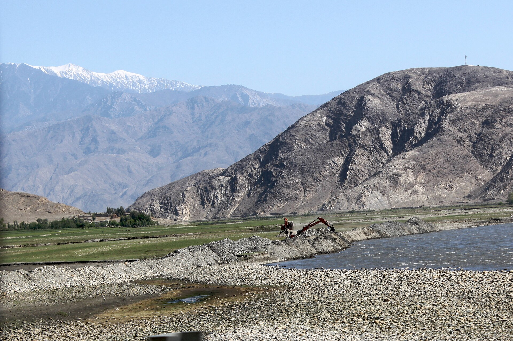
He take me from his home, morning time. We went to the city, and he give me to the agent.
Across Iran
Hiding from the police across Iran
The smuggler drove him from Jalalabad to the Iranian border, packed into the back of a car with strangers. Inside Iran, the cars kept stopping. When the police appeared, everyone jumped out and ran.
They hid in trees and scrub for one night, two nights, until the police left. Then they walked, eight or nine hours at a time, until another car came.
After Tehran, they were put under a long-distance bus, in the space beside the tyres. Four of them.
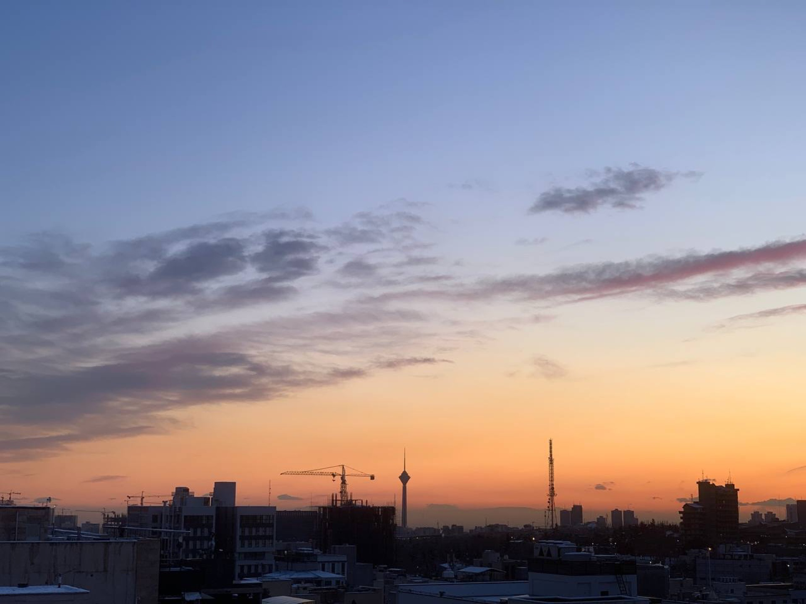
We only ate the yogurt. Yogurt, with water.
Six months
Stuck in a mountain village on the Iran–Turkey border.
Something went wrong with the money. No one told him what.
The Turkish border
Escaping a cage at the Turkish border
They were walked over the mountains, past the customs posts, down the other side. Then they were locked in a cage, a pen of wire and nails.
They cut through it and ran. Seventeen people, one of them a woman, crammed into cars and driving themselves.
An old house on the border. A bus ticket. Twenty-four hours to Istanbul.
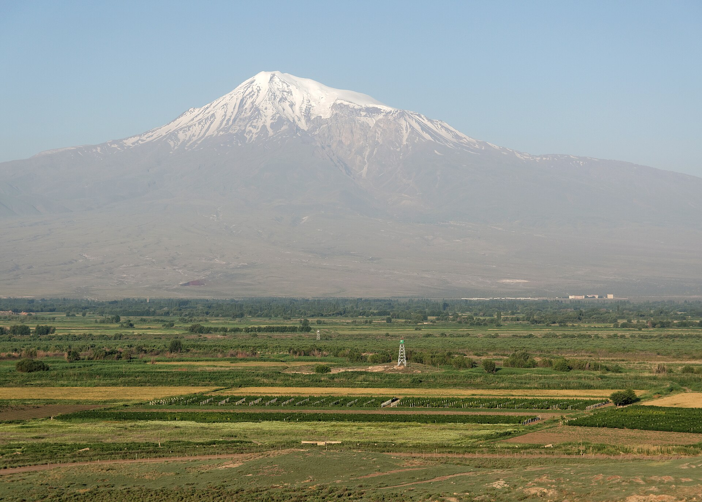
We cut the cage, and we run.
The Bulgarian border · Winter
Beaten and pushed back at the Bulgarian border
From Istanbul a car took them to the edge of the forest. It was winter: snow, then rain. They ran through the trees and crossed into Bulgaria at dawn. Three nights walking. The food ran out.
Bulgarian police caught them. Searched them. Took Karim’s jacket, and left him in a t-shirt in the rain.
Then they were driven back to the Turkish border and beaten with sticks. Pushed back over the line.
They walked four hours to find a village, drank tea, and took a car back to Istanbul. And then they started again.
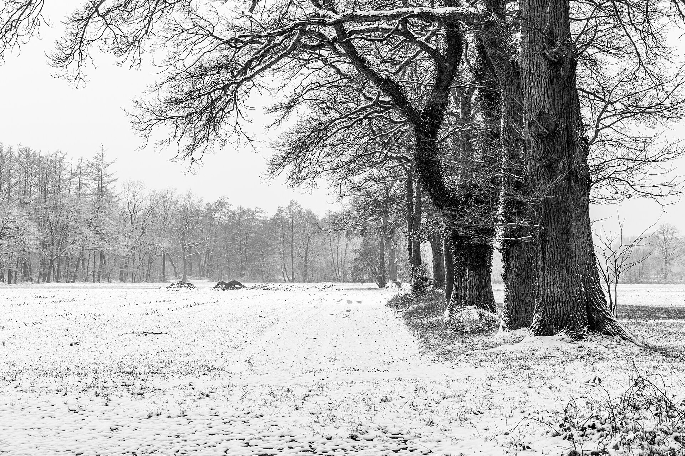
They hit us, with sticks. This is so dangerous. It’s so bad.
They take my jacket. I only have one t-shirt, and the rain is so fast.
The second time, the smuggler’s house was raided at dawn. Dogs. Prison. Fingerprints. Then a closed camp for twenty-two days, and an open camp in Sofia for eight more, where he couldn’t leave without a card.
Serbia
Three days in a forest near Hungary
A night drop at the Serbian border, a man who knew the way, a walk until morning. Directions written down: this bus, then that bus, then Belgrade.
In a Belgrade park full of people like him, he phoned the agent. Someone came, and took them north to a forest near the Hungarian border. Three days, no tent, no sleep. Every day they cooked eggs on a fire.
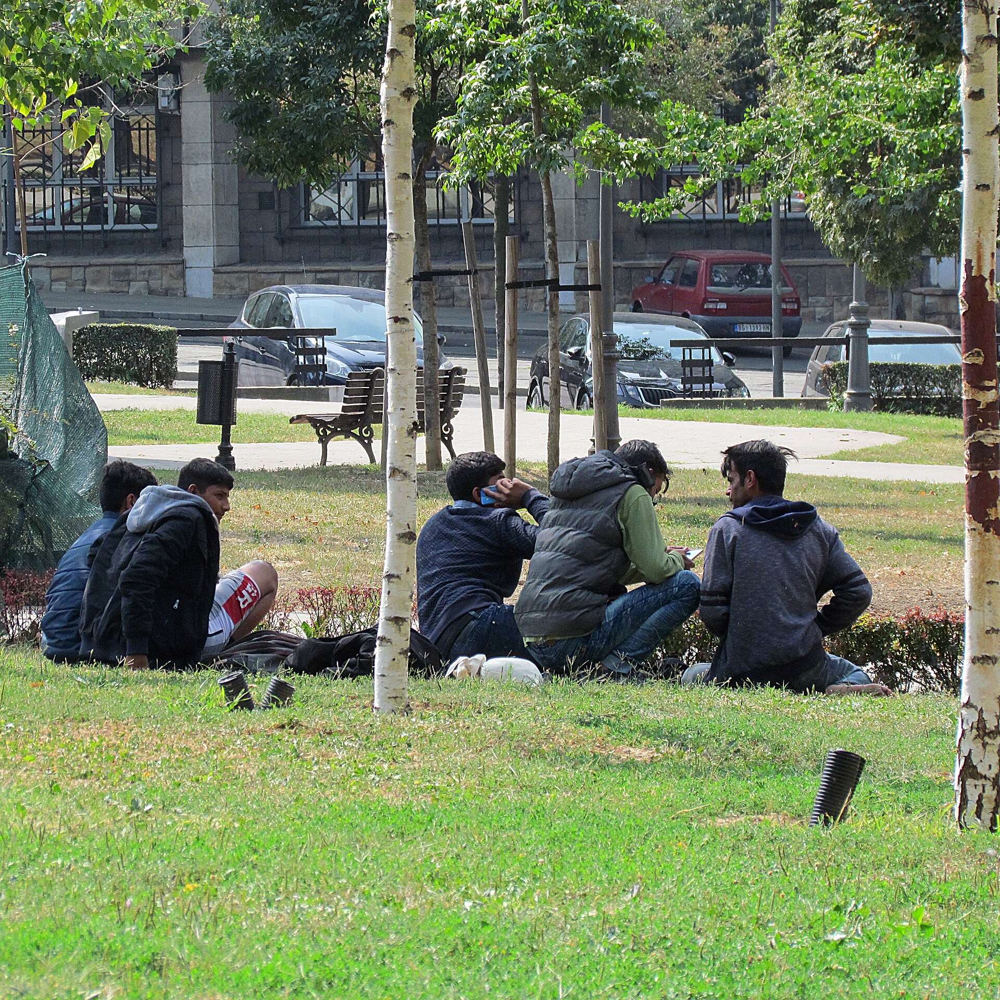
Hungary
Fingerprinted and sorted by nationality in Hungary
Hungarian police caught them at the border. A band went on each wrist: Afghan. Pakistani. Syrian. Iraqi. Sorted by nationality.
Police station, then a container camp, then a train with sixty others, children and families among them, to a camp near the Romanian border. Fingerprints, again.
I asked her, why these fingers? She said, this is a European finger.
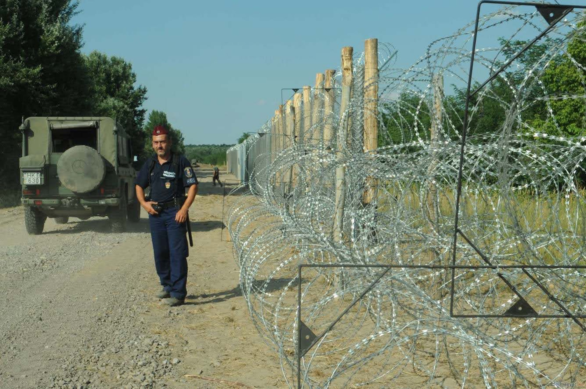
Slovenia → Italy
Arriving in Italy with nothing
A car with blacked-out windows left at two in the morning. By dawn they were at the Slovenian border; four hours along the motorway, the driver stopped and let them out.
No bags. No money left. The Italian police took their fingerprints, handed them a paper, and told them they weren’t responsible for them.
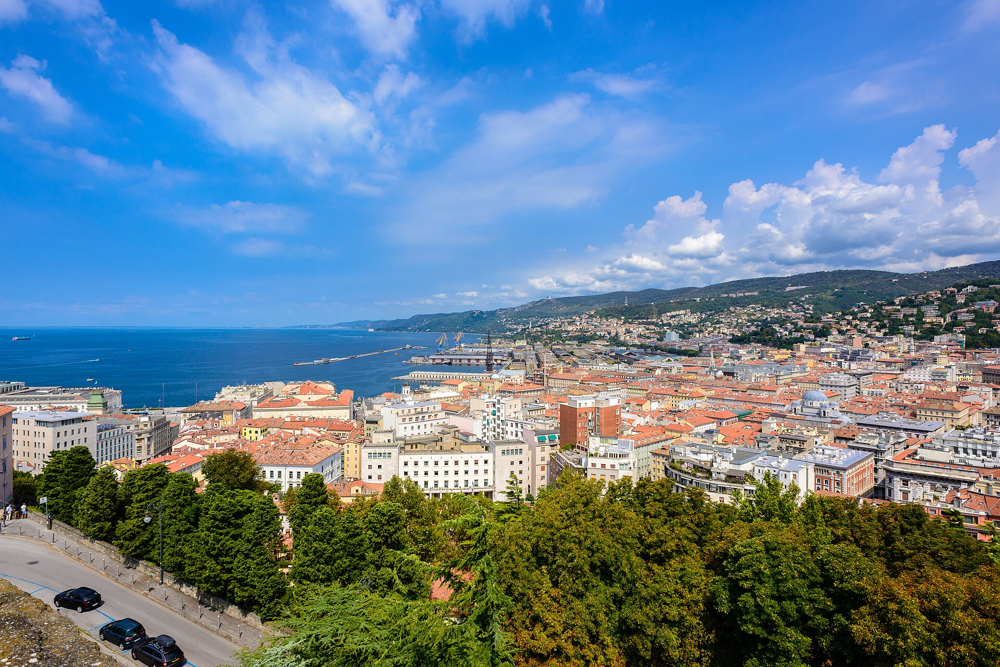
We have nothing. Even no bags. Only our clothes.
A friend called from Milan: why are you staying there? Karim spent six months in Milan. He got a five-year permit. He picked grapes and oranges.
Somewhere along the way he lost the agent’s number, his uncle’s number, everything. No phone, no Facebook, no one from his village. No way to tell his uncle he was alive.
I like Italy. But my friend said, there is no work. What are you doing here?
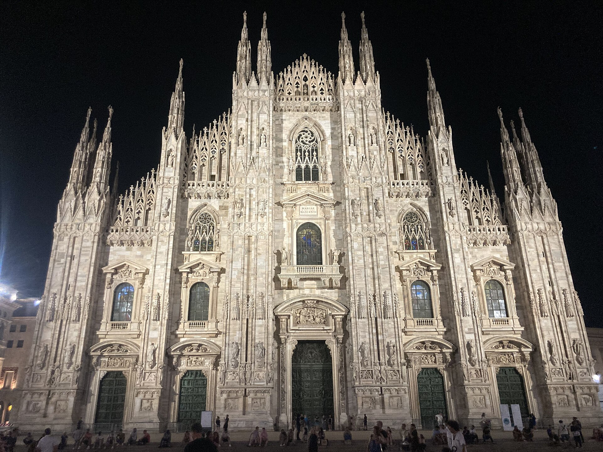
Calais, France
Trying to reach England from Calais
He arrived in the evening, in the dark. Outside the camp there was a market: men selling phones, cables, whatever they had. A friend found him a shelter and something to eat.
At night they go to the road and try to get into lorries heading for England. It is almost impossible: you can’t get inside, and when you’re caught, you’re dragged out.
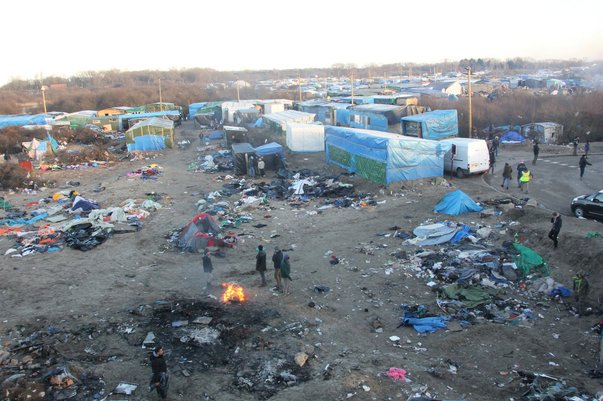
When I reached here, I said: what is this? What is this life?
Photos from our days in the camp, February 2016


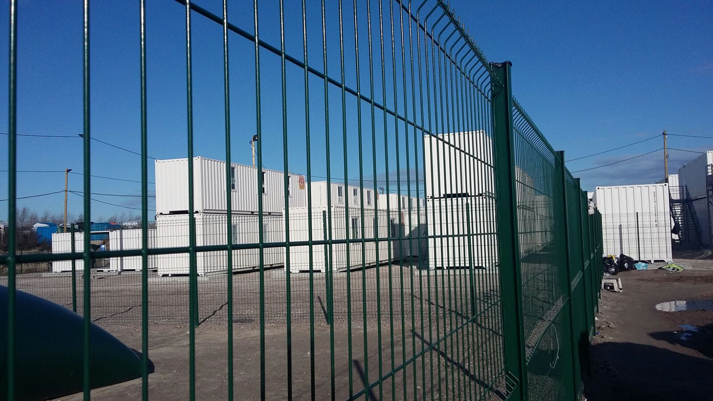
The cost, so far
What the journey has cost him
Land, cows and goats, sold to pay a smuggler
Lost under buses and in the backs of cars, living on yogurt and water
Waiting in a mountain village while the money was sorted out
Days locked in a closed camp
Days without sleep in a forest
Nights on the street in the cold
Attempts to reach England, and counting
Why England?
Men from my village went to England. Their families say they are happy. Since I was a child, I heard England is a good place.
February 2016
“I want to reach
my destination.
Out of here.”
Karim was twenty-two. He spoke English he picked up along the road, from smugglers, from other travellers, from the months spent waiting. He had crossed eight borders and lost everyone he grew up with, and he was still in Calais.
Afterwards
He never made it to England.
I haven’t spoken with Karim in years. He never did make it to England, and I believe he settled in Italy.
About the recording
I came to Calais to volunteer and ended up serving tea to the refugees.
In February 2016, some friends and I spent several days in the Calais “Jungle”, serving tea and biscuits in the Afghan area of the camp.

The chai hut was a little wooden hut under a green awning. We served tea and biscuits from it, and once a day a hot lunch made by another volunteer group. We took turns making the tea, and the rest of us chatted with whoever came over. There was nowhere to sit, so that’s how it went, standing around with cups of tea, talking.
Karim was one of the men we got to know. He was helpful and lovely, and after talking with him a few times I asked if he’d mind us interviewing him to document his story. He was really keen to share it.
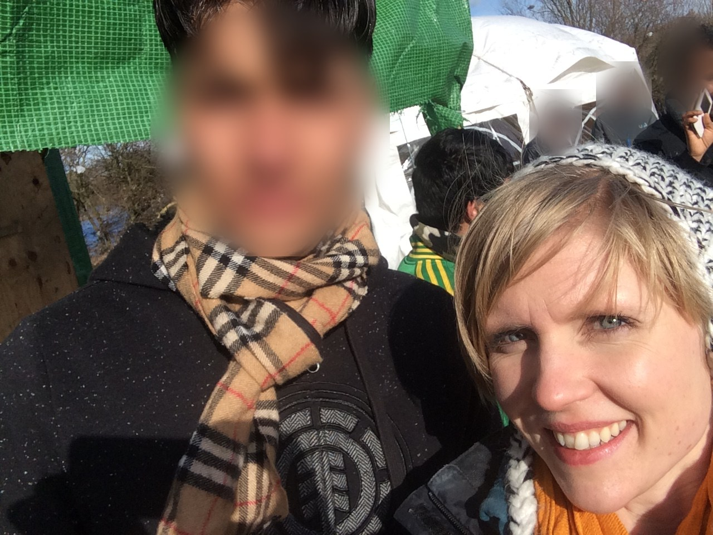
Karim and me in the camp, February 2016
For years I thought I’d lost the recording. I’d always wanted to do something with it, so when I found it again I knew it was time to share his story.